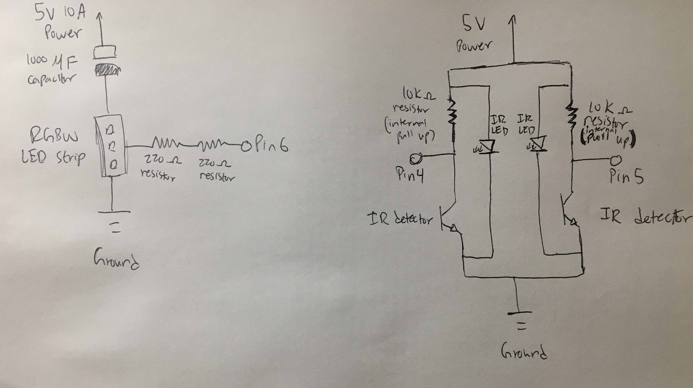
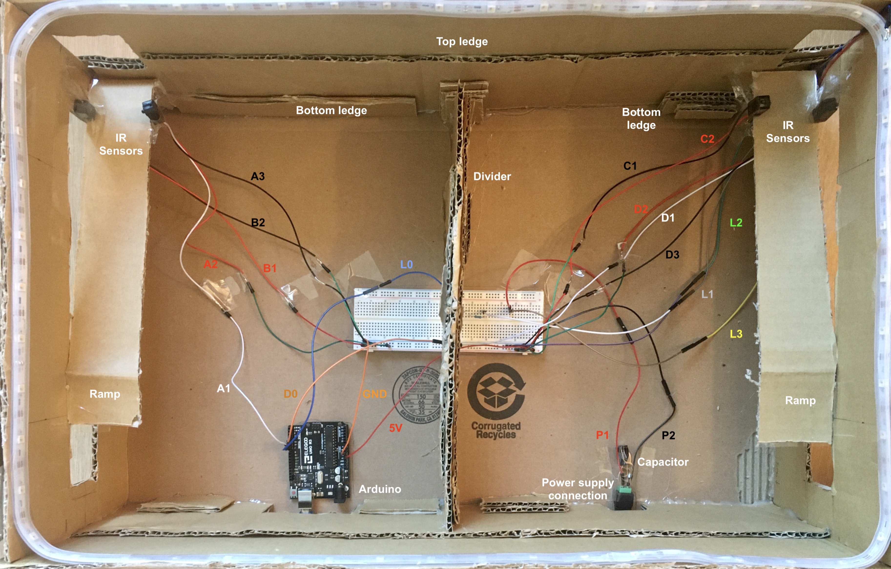

The final project was about creating a physical product with integrated electronics—that means something more than just a circuit, but something that was functional, had an inout, an output, and is passable as a prototype (e.g., not just a breadboard).
While brainstorming what to create for the final project, my main personal objective was to create something fun. One of the things I enjoy doing during my free time is going to the arcade, like Round 1 or GameWorks. When I was browsing for project ideas, I ran into a "DIY Magnetic Table Hockey Project" in the Arduino Project Hub (https://create.arduino.cc/projecthub/evive/diy-magnetic-table-hockey-with-rgb-lights-and-sensors-c940f1). While the technology and materials they used was different, I thought it would be a nice challenge to adapt it to the technology covered in class. So, instead of using the Stempedia Evive, which allows for greater programming flexibility (similar to a LEGO Mindstorm), I sought to create a version with the Arduino we had, a NeoPixel RGBW LED strip, and 2 IR break beam sensors. The ingredients were simple, yet the results can bring hours of fun.

The concept of air hockey is that there are two teams, and each team wants to score in the other team's goal. As such,
there are two input devices—an IR break beam sensor for each team's side to detect when a ball enters their goal. The output
device is a NeoPixel RGBW LED strip that changes color when a goal is scored. When red team scores, the color changes to red.
When blue team scores, the color changes to blue.
Turns out, the RGBW LED strips are fairly "fragile." For the RGBW LED strip, a 1000 microfarad capacitor was added across the positive
and negative terminals of the power supply to prevent power surges from damaging the strip. Similarly, two 220 ohm resistors were placed between the digital pin and
the RGBW led strip to protect the strip from being damaged by surges. Both of these measures are recommended by the manufacturer (https://learn.adafruit.com/adafruit-neopixel-uberguide/powering-neopixels).
You may also have noticed that a different power supply than the one included in our kits was used—5V, 10A. It was expensive, but
would provide the maximum amount of protection for the strip and the adapter itself. The strip can only take about 5V maximum and, for
a 2 meter strip with 60 LEDs, needs 3.6 amps of current (60 LEDs * 0.06A) if all LEDs are on at maximum brightness.
Meanwhile, the IR break beam sensors come in pairs, one IR LED, one IR receiver. The receiving end needs to be hooked up to a pin
with the internal pull up resistor enabled and can share the Arduino's 5V power supply, separate from the power supply for the RGBW LED strip.

The circuit looks complex because of all the soldering needed to get the wired long enough to reach both ends of the cardboard box. The entire length is about 23 inches. Ultimately, connections need to be made to the IR break beam sensors (A, B, C, and D) and the RGBW LED strip (L). L0 first connects from the digital pin to the breadboard, passes through resistors, before continuing the connection to L1. The LED strip's wires travel up the top-right corner of the box to remain out of the way. The Arduino and power supply connection are placed at the edge of the box to allow hookups to a computer and power outlet. The bottom ledges pictured are for placing a cardboard sheet over the wiring so that when players use magnets at the end of chopsticks to move the pucks above, the chopsticks will not catch on any of the wires. The top ledge is where the main play area's surface is placed.
// LED Strip setup, include Adafruit's NeoPixel library
#include
#ifdef __AVR__
#include // Required for 16 MHz Adafruit Trinket
#endif
// IR break beam sensor setup, one for each sensor pair (LED + receiver)
#define SENSORPIN_A 4
#define SENSORPIN_B 5
// LED Strip setup, digital pin 6 controls lights
#define LED_PIN 6
// Amount of NeoPixels attached to the Arduino
#define LED_COUNT 60
// Set initial IR variables to detect change in states later
int sensorState_A = 0, lastState_A = 0;
int sensorState_B = 0, lastState_B = 0;
// Declare the NeoPixel strip object:
Adafruit_NeoPixel strip(LED_COUNT, LED_PIN, NEO_RGBW + NEO_KHZ800);
// Argument 1 = Number of pixels in NeoPixel strip
// Argument 2 = Arduino pin number (most are valid)
// Argument 3 = Pixel type is RGBW and NEO_KHZ800, 800 KHz bitstream
// (most NeoPixel products w/WS2812 LEDs)
// setup() function -- runs once at startup
void setup()
{
// initialize the IR sensor pins as an input and enable internal pullup:
pinMode(SENSORPIN_A, INPUT_PULLUP);
pinMode(SENSORPIN_B, INPUT_PULLUP);
// Start serial monitor stream
Serial.begin(9600);
// NeoPixel-specific check
#if defined(__AVR_ATtiny85__) && (F_CPU == 16000000)
clock_prescale_set(clock_div_1);
#endif
// END of Trinket-specific code.
strip.begin(); // INITIALIZE NeoPixel strip object (REQUIRED)
strip.show(); // Turn OFF all pixels ASAP
strip.setBrightness(50); // Set BRIGHTNESS to about 1/5 (max = 255)
}
void loop() {
// Hue of first pixel runs 1 complete loop through the color wheel.
// Color wheel has a range of 65536 but it's OK if we roll over, so
// just count from 0 to 5*65536. Adding 256 to firstPixelHue each time
// means we'll make 5*65536/256 = 1280 passes through this outer loop:
for(long firstPixelHue = 0; firstPixelHue < 65536; firstPixelHue += 256) {
// For each pixel in strip...
for(int i=0; i < strip.numPixels(); i++) {
// read the state of the sensor pairs, A is when Red Team scores
sensorState_A = digitalRead(SENSORPIN_A);
// B pair is for when the Blue Team scores
sensorState_B = digitalRead(SENSORPIN_B);
// check sensor pair A for change in state
if (!sensorState_A && lastState_A) {
// print to serial monitor when beam broken
Serial.println("A Broken");
// Fill along the length of the LED strip in red
colorWipe(strip.Color(0, 255, 0), 50);
// Flash lights in chasing pattern, red, half brightness
theaterChase(strip.Color(0, 127, 0), 50);
}
// reset state changes for next check
lastState_A = sensorState_A;
// check sensor pair B for change in state
if (!sensorState_B && lastState_B)
{
// print to serial monitor when beam broken
Serial.println("B Broken");
// Fill entire length of LED strip in blue
colorWipe(strip.Color( 0, 0, 255), 50);
// Flash lights in chasing pattern, blue, half brightness
theaterChase(strip.Color( 0, 0, 127), 50);
}
// reset state changes for next check
lastState_B = sensorState_B;
// Offset pixel hue by an amount to make one full revolution of the
// color wheel (range of 65536) along the length of the strip
// (strip.numPixels() steps):
int pixelHue = firstPixelHue + (i * 65536L / strip.numPixels());
// strip.ColorHSV() can take 1 or 3 arguments: a hue (0 to 65535) or
// optionally add saturation and value (brightness) (each 0 to 255).
// Here we're using just the single-argument hue variant. The result
// is passed through strip.gamma32() to provide 'truer' colors
// before assigning to each pixel:
strip.setPixelColor(i, strip.gamma32(strip.ColorHSV(pixelHue)));
}
// Update strip with new contents
strip.show();
// Pause for a moment
delay(10);
}
}
// Function sets length of LED strip to designated color,
// one pixel at a time, consecutively
void colorWipe(uint32_t color, int wait) {
for(int i=0; i < strip.numPixels(); i++) { // For each pixel in strip...
strip.setPixelColor(i, color); // Set pixel's color (in RAM)
strip.show(); // Update strip to match
delay(wait); // Pause for a moment
}
}
// Theater-marquee-style chasing lights. Pass in a color (32-bit value,
// a la strip.Color(r,g,b) as mentioned above), and a delay time (in ms)
// between frames.
void theaterChase(uint32_t color, int wait) {
// Repeat 10 times...
for(int a=0; a < 20; a++) {
// 'b' counts from 0 to 2...
for(int b=0; b < 3; b++) {
// Set all pixels in RAM to 0 (off)
strip.clear();
// 'c' counts up from 'b' to end of strip in steps of 3...
for(int c=b; c < strip.numPixels(); c += 3) {
// Set pixel 'c' to value 'color'
strip.setPixelColor(c, color);
}
// Update strip with new contents
strip.show();
// Pause for a moment
delay(wait);
}
}
}
This is the code used to run the program. It is largely borrowed from two previous works: (1) for the IR
break beam sensors, an Arduino community forum thread with groundFungus' response
(https://forum.arduino.cc/index.php?topic=465252.0) and (2) for the RGBW LED strips, the Adafruit NeoPixel
example StripTest program that comes with the NeoPixel library.
One oddity of the NeoPixel library was when declaring the RGBW value for the LEDs, turns out, the values were mixed up and
instead of RGB (red-green-blue), it's GRB (green-red-blue). After figuring that out, the most difficult challenge code-wise
was finding out how to make sure the IR break beam sensors would update during one cycle of the LED strip color run (e.g.,
to produce a rainbow glow effect, the RGBW strips have code to produce the effect in one whole cycle). Initially, since I was merging
two programs together, I would call the rainbow pattern effect from the loop method as a separate method. However, this resulted in the
IR break beam sensors only being ready to detect a value once the inital rainbow cycle had completed. The solution was moving the rainbow
pattern effect into the loop method and for every pixel color update made, to then check the IR break beam sensor values for any changes.
This provided the desired results of being able to detect obstacles readily at any given time without delay. Otherwise, there are two
additional color patterns included that are called upon outside the loop when an IR break beam sensor is tripped—colorWipe and theaterChase,
which will use the respective team's color (blue or red) when called upon when a goal is scored.
While the game is happening, the play area will continuously glow with a soft rainbow pattern. The cardboard air hockey has two "goal"
areas. When a ball enters into one goal area, the scoring team's color will light up in the playfield. For instance, if the red team scores,
then the LEDs will change to a red-colored pattern. If the blue team scores, the LEDs change to a blue-colored pattern. This is possible because
each IR break beam sensor pair (receiver and LED) is connected to its own digital pin, so each pin has its assigned color values to call
the color pattern methods with. When the ball trips one sensor in the goal area, the colorWipe sensor is first called to change the rainbow glow LED to the
winning team's color, consecutively, in a clockwise motion. Then, after the colorWipe, the theaterChase method is invoked to create a flashing
effect with the winning team's color. After these two patterns are completed, the variables holding the sensor states reset and the rainbow
glow pattern resumes until the next time a sensor is tripped.
While creating the physical structure, it was important to plan out where each component (breadboard, Arduino, and power supply connection) would
go before hot gluing more cardboard down. By planning ahead, it prevented cases where the wire was too short to reach a certain place. It also
made the layout more organized. Each component was tested individually before being added together. So, the RGBW LED strip was powered on first
and tested with the Arduino StripTest program. Then, the IR break beam sensors were tested with the serial monitor. Then, finally, when all
pieces worked, they were all connected together. The step-by-step process of testing prevents damaging any component.
In the video demo, you first see the IR break beam sensor being tested. The color changes to red through a colorWipe when an obstacle is detected. Then, you'll see a close-up of the hockey puck being used—a tape roll core with an N55 neodymium magnet stuck to its bottom. You see it move, seemingly magically, but alas, it's because of a pair of chopsticks with a magnet taped to the end moving the puck from below. The goal ramp does not block or obscure the magnet because there is a height at the end of the chopstick to provide clearance from the ramp. The video then proceeds to show what happens when the ball is scored into the goal when the room lights are on. The blue team scored, so the colorWipe is called and changes the rainbow glow to blue in a clockwise direction. The lights then flash blue before returning to a rainbow glow. Lastly, the same is done but in the dark to maximize the visual effects of the RGBW LEDs. It definitely looks a lot better and a lot cooler in the dark!